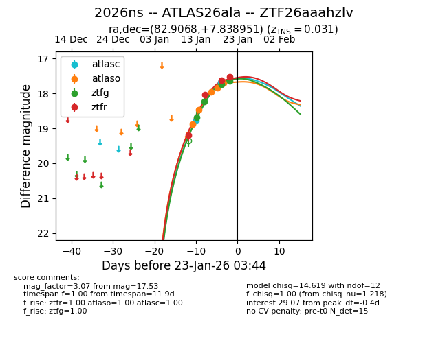
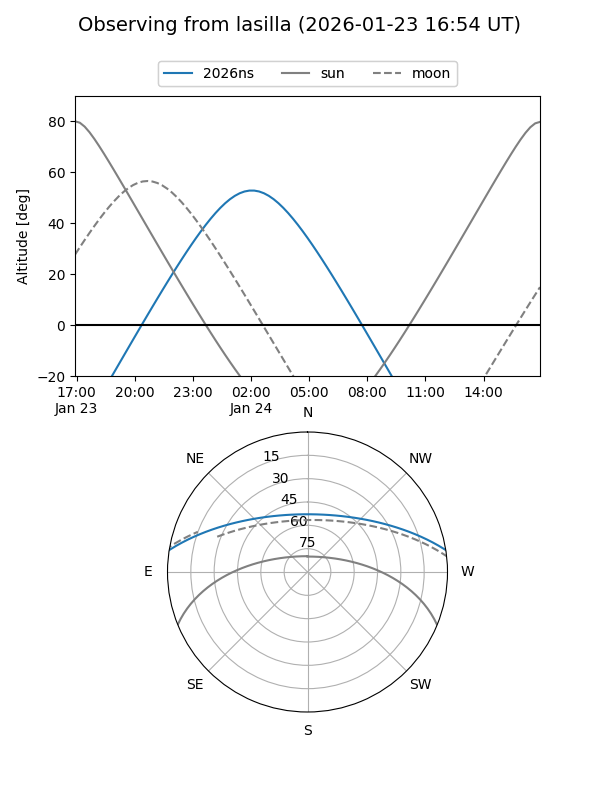
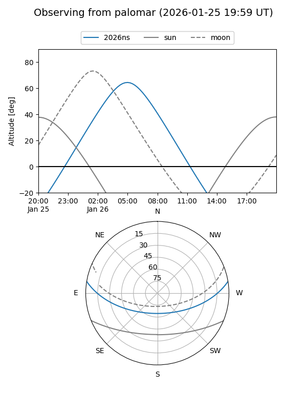
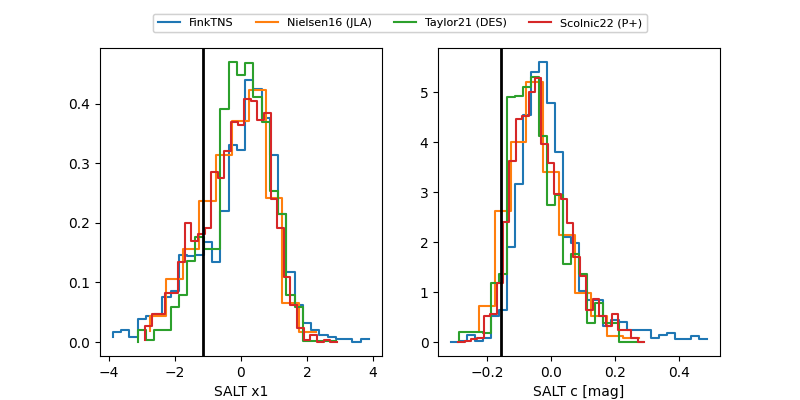

2026ns
Target 2026ns at 2026-01-15 08:00
Aliases and brokers:
FINK: link
Lasair: link
ALeRCE: link
TNS: link
YSE: link
alt names
ZTF26aaahzlv (ztf,fink_ztf)
2026ns (tns,yse)
Coordinates:
equatorial (ra, dec) = 82.9068,+7.83895
equatorial (HMS+DMS) = 05:31:37.63,+07:50:20.22
galactic (l, b) = (196.4488,-13.80828)
Flags:
Photometry:
last ztfg=18.69, ztfr=19.20
1 ztfg, 1 ztfr detections
Lightcurve

Visibility


Additional plots
